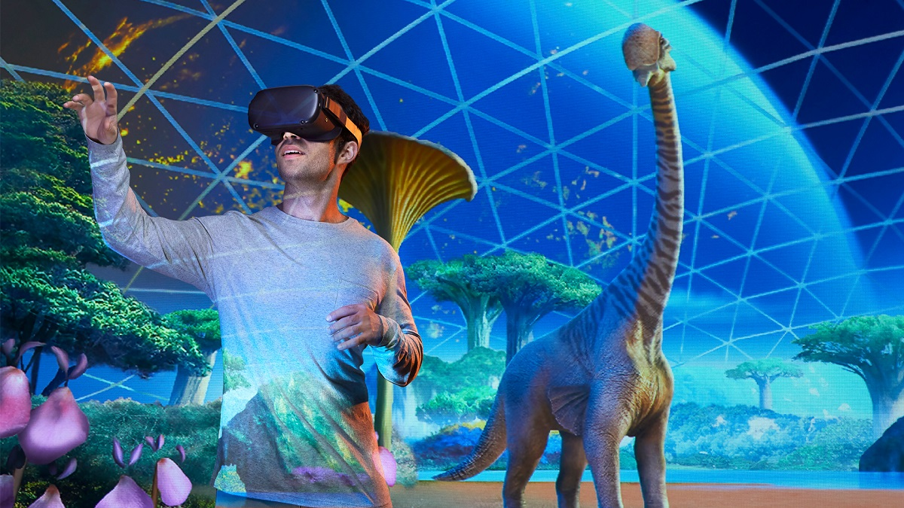

In the dynamic world of higher education technology, technology's rapid evolution is reshaping the way we learn and teach. The aftermath of the COVID-19 pandemic has propelled the educational landscape into an era of innovation, where emerging trends in educational technology are driving unprecedented change.
Projections by Statista reveal a staggering growth trajectory for the global e-learning market, hinting at the transformative potential of technology in education.
As we step into 2025, it's evident that these emerging higher education technology trends are not just trends – they are the building blocks of a future where education is more accessible, engaging, and effective than ever before.
In this era of accelerated change, exploring and harnessing trends in educational technology is essential for educational institutions to remain at the forefront of learning excellence.
In this blog, we will explore these 7 transformative trends in higher education that are reshaping the educational landscape and providing a glimpse into the future of learning. From the integration of artificial intelligence to the immersive experiences offered by augmented and virtual reality, these technology trends in education are revolutionizing how knowledge is imparted and acquired.
As we delve into each trend, you will uncover how they can be harnessed to create meaningful, personalized learning experiences that cater to the diverse needs of today's learners.
Here are 7 of the most promising innovations in higher education technology to embrace this year and beyond.
1. AI-Powered Tutoring Systems: The Future of Learning in 2025
In the educational landscape of today, Artificial Intelligence (AI) is emerging as a catalyst for a profound transformation. AI-powered tutoring systems, in particular, are at the forefront of this revolution, redefining the way we learn and teach.
These systems are not just technological marvels, instead, they represent a seismic shift towards personalized, adaptive, and engaging education.
Imagine having access to an AI tutor that understands your learning pace, preferences, and areas of struggle.
These AI-powered systems are more than just repositories of information. They are interactive companions, capable of delivering tailor-made lessons that resonate with each student.
The result?
A learning experience that feels strikingly human, despite being driven by cutting-edge technology.
✔️Personalized Learning Redefined
AI-powered tutoring systems excel at personalization. They adapt to each student's learning style, ensuring that the material is presented in a way that resonates with them. No more struggling to keep up with the pace of a traditional classroom or feeling held back by it.
AI tutors are dynamic and responsive, adjusting their approach as you progress.
✔️Elevated Engagement with Higher Education Technology
Traditional one-size-fits-all teaching methods often struggle to capture the attention of today's tech-savvy learners.
AI-powered tutoring systems, however, bridge this gap by harnessing the power of multimedia, interactive simulations, and real-time feedback. This creates an engaging and immersive learning environment that keeps students motivated and eager to explore.
✔️A Lifelong Learning Companion
The journey of learning doesn't end with formal education.
It's a lifelong endeavor.
AI-powered tutoring systems understand this, and their ability to constantly evolve and learn means they can accompany you throughout your learning journey. Whether you're studying for exams, acquiring new skills, or seeking to broaden your horizons, these systems are there to guide you.
✔️Empowering Self-Paced Learning in Higher Education Technology
Flexibility is a hallmark of modern education.
AI-powered tutoring systems shine in promoting self-paced learning.
With AI, you're not bound by rigid schedules or timelines. You learn at your speed, and the AI tutor adapts to your progress. This autonomy fosters a sense of ownership over your education, leading to increased confidence and a deeper understanding of the material.
 Get the App from Meta Store: Download Now
Get the App from Meta Store: Download Now
2. Microlearning: Knowledge in Bite-Sized Chunks
In an era where information bombards us from every angle, capturing attention and fostering meaningful learning experiences can be a challenge. But, microlearning is a game-changing trend that's revolutionizing education by delivering knowledge in bite-sized, easily digestible chunks.
Due to its capacity to convey condensed, easily digested knowledge, address short attention spans, and lowering cognitive load, microlearning is becoming more and more popular as one of the top technology trends in higher education.
Its adaptability and accessibility make it an excellent resource for contemporary learners looking for effective, mobile learning experiences.
This approach proves that less truly can be more when it comes to effective learning.
3. AR and VR as a Higher Educational Technology

Source: ASU News
Education is no longer confined to textbooks and classrooms.
Augmented and virtual reality (AR/VR) technologies have introduced a new dimension to learning, one that is immersive, interactive, and incredibly engaging. These technologies transport learners beyond the confines of traditional education, enabling them to explore subjects in ways that were once unimaginable.
With augmented and virtual reality classrooms, learners can journey to historical landmarks, explore distant galaxies, and dissect intricate biological structures – all from the comfort of their learning space.
These technologies shatter geographical limitations, making education a global experience.
Imagine learning about ancient civilizations by virtually stepping into their cities or unraveling complex scientific concepts by interacting with them in a virtual laboratory.
4. Gamification: Playful Pathways to Learning
Gamification injects the magic of games into education, turning learning into a captivating adventure. By infusing educational modules with elements like leaderboards, points, and challenges, gamification sparks engagement, motivation, and healthy competition among learners. Complex concepts become puzzles to solve, and achievements become rewards to chase.
In this innovative approach, students actively participate, gaining a sense of achievement while enjoying the learning process. Gamification creates a dynamic learning environment where curiosity thrives and knowledge sticks.
As education takes on the guise of a thrilling game, students eagerly embark on a journey of discovery, fostering a lifelong love for learning.
5. Personalized Learning: Tailoring Education to Individual Needs
Personalized learning taps into the power of data analytics and machine learning, fashioning tailored educational journeys. Understanding each student's strengths, interests, and learning preferences, this trend fosters engagement and expertise.
✔️ Unveiling the Unique
Imagine lessons designed precisely for you, i.e., matching your pace, catering to your passions, and accommodating your learning style. Personalized learning ensures that education isn't just delivered but designed, catering to individual abilities for enhanced understanding and mastery.
✔️ Empowerment through Adaptation
Personalized learning doesn't merely adapt to your pace, it empowers you to own your educational journey. Whether you grasp concepts swiftly or need extra time, personalized pathways enable confidence and meaningful progress, creating learners equipped not just for exams but for lifelong success.
6. Blockchain Emerging as Higher Education Technology Trend in 2025
Blockchain's secure and decentralized nature is poised to revolutionize education. Beyond its association with cryptocurrencies, blockchain is reshaping academic records. By digitizing degrees, report cards, and other credentials, it streamlines administrative processes while enhancing data security and accessibility.
This technology ensures authenticity and eliminates the risk of tampering, making academic achievements verifiable and trustworthy. In addition, blockchain simplifies fee payments, reduces bureaucracy, and lowers costs, contributing to a more efficient and transparent educational ecosystem.
The future of education lies in this technology's ability to create a seamless, reliable, and empowered learning environment.
7. Automated Assessment: Streamlining Evaluation
Automated assessment technology is revolutionizing how educators evaluate student performance. By automating the grading process for assignments and tests, this technology not only saves valuable time but also ensures fairness and objectivity.
Through predefined criteria, students receive prompt and consistent feedback, enabling them to identify areas of improvement and track their progress. Educators can redirect their focus to providing personalized guidance and fostering meaningful interactions with students, rather than being burdened by administrative tasks.
As a result, automated assessment enhances the learning experience for both students and educators, creating a more efficient and effective educational ecosystem.
Conclusion
As the higher education technology landscape continues to evolve, institutions must adapt to remain relevant. Embracing these emerging educational technology trends ensures that students receive a cutting-edge education that's engaging, adaptable, and personalized.
By incorporating AI-powered tutoring systems, microlearning, AR/VR experiences, gamification, personalized learning, blockchain, and automated assessment, educational institutions can navigate the transformative landscape of 2025 and beyond.
The fusion of technology and education isn't just a passing trend—it's the key to unlocking a brighter future for learners worldwide.